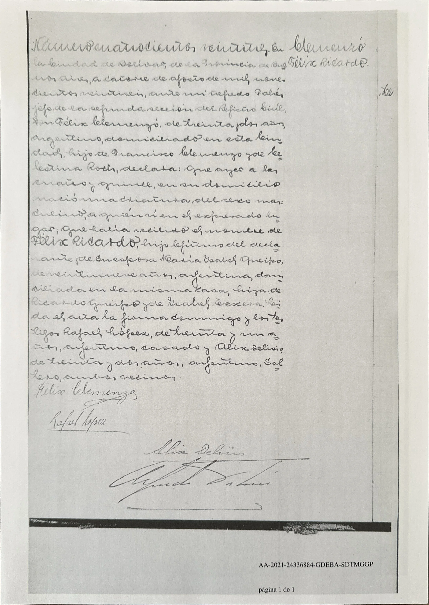

La historia
Félix Ricardo nació el 13 de agosto de 1926, a las 4:15, en el domicilio familiar de la ciudad de Bolívar, provincia de Buenos Aires — en plena etapa rural bonaerense de sus padres Felix Clemenzo y Isabel Maria Queipo (casados en Guaminí en 1922, en San Fernando desde 1927: la partida lo muestra todavía en Bolívar en agosto de 1926, y al año siguiente la familia ya estaba en el Gran Buenos Aires).
Su padre lo declaró al día siguiente ante el Registro Civil (acta N.º 423, 2.ª sección): «Don Félix Clemenzó, de treinta y dos años, argentino, hijo de Francisco Clemenzo y de Celestina Roch» — con esa declaración la cadena François Clemenzo → Felix Clemenzo → p10 queda cerrada por documento, tercera generación con los abuelos nombrados. La madre figura «su esposa María Isabel Queipo, de veintinueve años, argentina, hija de Ricardo Queipo y de Isabel Texera». Testigos: Rafael López (31, casado) y Alix Delisio (32, soltero; lectura insegura), «ambos vecinos».
Detalles menores de acta: la madre aparece «María Isabel» (la base la tiene «Isabel María») y con 29 años cuando tenía 28 (nacida el 11-9-1897); el apellido paterno lleva tilde («Clemenzó») y la firma paterna se lee «Félix Clemenz~», con la rúbrica comiéndose la última letra.
Félix Ricardo casó con Raquel Noemí Carvallo —acta aún no documentada— y tuvo a Daniel Jorge (Daniel Jorge Clemenzo, 1959) y Guillermo Alejandro (Guillermo Alejandro Clemenzo, 1964). Raquel fue una de las transmisoras de la tradición oral que hacía del apellido una deformación de «Clemenceau» — ver [[el-mito-clemenceau]].
La partida en la ficha es una copia digital expedida por la Provincia de Buenos Aires en 2021 (sello GDEBA).
Cronología
| Año | Fuente | Qué dice |
|---|---|---|
| 1926-08-13 | Acta de nacimiento N.º 423, Registro Civil de Bolívar (2.ª sección) | Nace a las 4:15 en el domicilio familiar, ciudad de Bolívar; declarado el 14-8 por su padre (32, argentino, hijo de Francisco Clemenzo y Celestina Roch); madre «María Isabel Queipo» (29, hija de Ricardo Queipo e Isabel Texera); testigos Rafael López y Alix Delisio |
| 1927 | Libreta de enrolamiento de Felix Clemenzo | La familia se muda a San Fernando (Buenos Aires) |
| 1959 | árbol | Nace su hijo Daniel Jorge (Daniel Jorge Clemenzo) |
| 1964 | árbol | Nace su hijo Guillermo Alejandro (Guillermo Alejandro Clemenzo) |
Qué falta / hipótesis
Líneas de investigación
- Buscar el acta de matrimonio con Raquel Noemí Carvallo (~1950–1959, ¿San Fernando / zona norte del GBA?)
- Resolver la discrepancia «Isabel Texera» vs. «Isabel Teresa Viñales» pidiendo el acta civil del casamiento de Guaminí 1922 (Sección 1.ª, N.º 15)
- Pedir su ficha de enrolamiento (clase 1926) — daría domicilios y ocupación de juventud
- Documentar su defunción
Fuentes
- Acta de nacimiento N.º 423, Registro Civil de Bolívar, 2.ª sección, 14-08-1926 — copia digital GDEBA 2021 (imagen en su ficha)
Documentos
